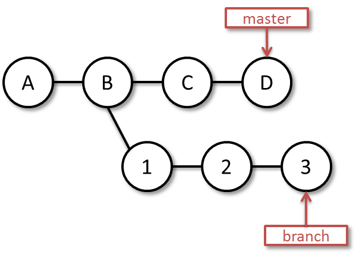
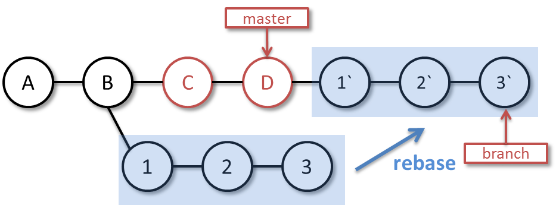

作業が錯綜する場合、つまり「これを作ってる途中だけど、やっぱりアレを先に作って」とか言われそうな場合なんかは、特にブランチを使うといいらしいぞ。
git checkout -b hoge
今のブランチ（たとえばmaster）を基に新たなブランチ「hoge」を作りつつ、作業スペースを移す。
git add .
git commit -m "…"
hogeブランチに、作業のコミットをしていく…。
git checkout master
git merge hoge
masterブランチに、hogeブランチをマージする。
新たなブランチ「hoge」を作りつつ、作業スペースを移し、作業のコミットをしていくところまでは同じだが、masterにマージするときにrebaseを行い、トピックブランチでのコミットを、トピックブランチでの作業中にmasterに対してコミットされた更新の上にかぶせたようにする。つまり、masterからの分岐地点を切り替える。文字で説明するのは難しい。
何となくな図：
1. ブランチで作業を進めて・・・

2. rebaseでmasterへブランチの変更を反映！

hogeブランチでの作業が終わったら、masterをfetchして、更新を取る。
git checkout master
git fetch origin master
その後、hogeブランチの分岐地点を切り替える
git checkout hoge
git rebase master
その後、masterに切り替えて、hogeをマージ
git checkout master
git merge hoge
で、push
git push
新たなブランチ「hoge」を作りつつ、作業スペースを移し、作業のコミットをしていくところまでは同じ。その後、originの更新を取り込んでrebase、masterの位置を替えてpushする。
git remote update
git rebase origin/master
git checkout master
git reset --hard hoge
git push
衝突ファイルを編集、解消し、addし、rebase --continueする。例えばindex.htmlが衝突した場合、良い感じに編集し、
git add index.html
git rebase --continue
masterをorigin/masterにrebaseし、再度pushを試みる。
git rebase origin/master
git push
git rebase origin/masterがconflictした場合は、上記と同じ操作をする。